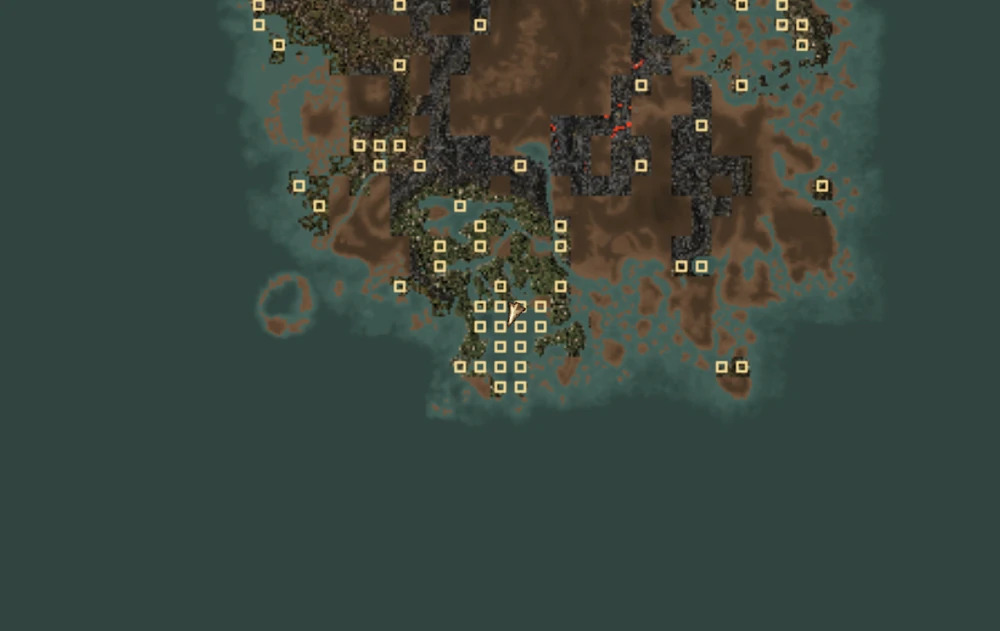
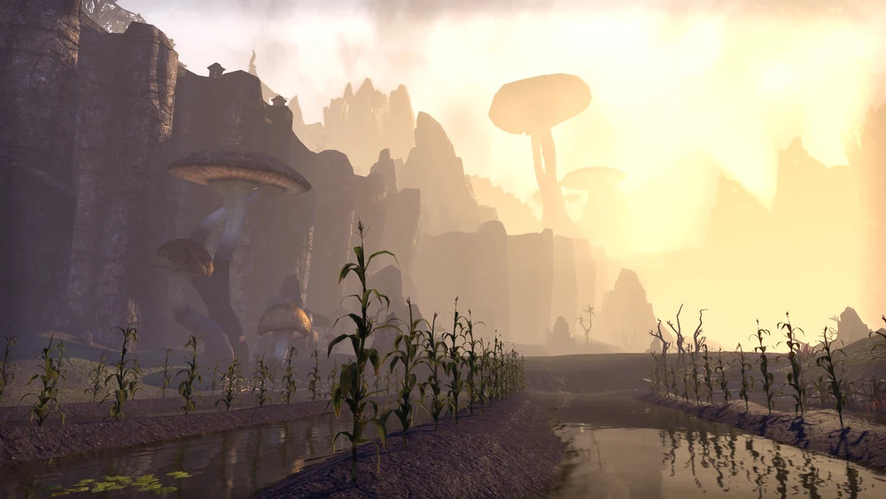
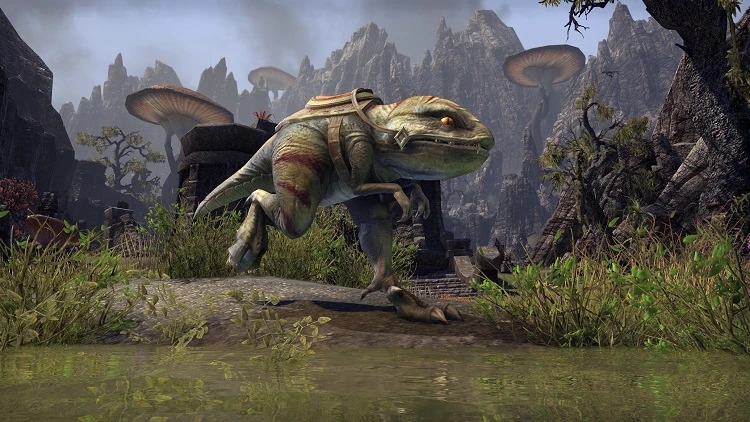
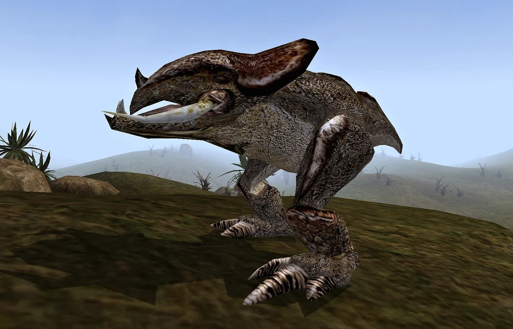
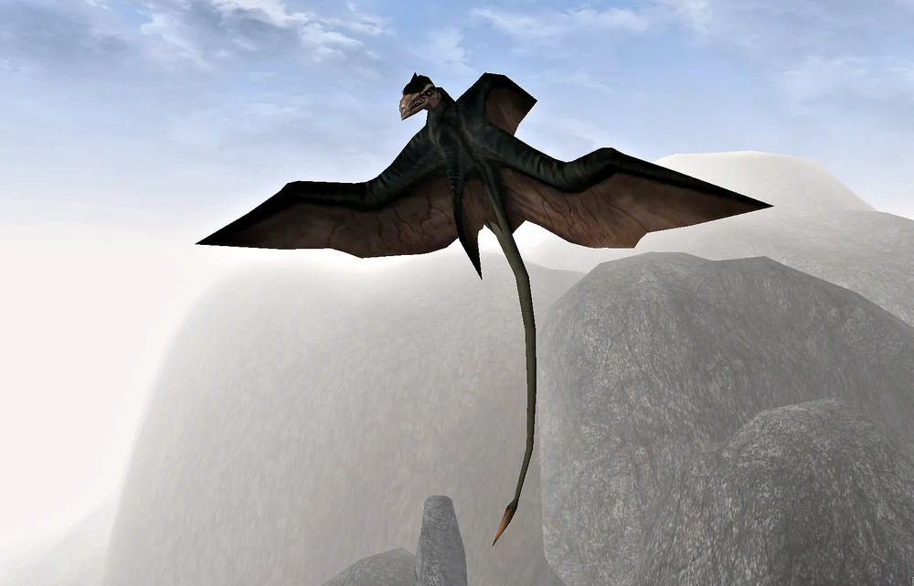
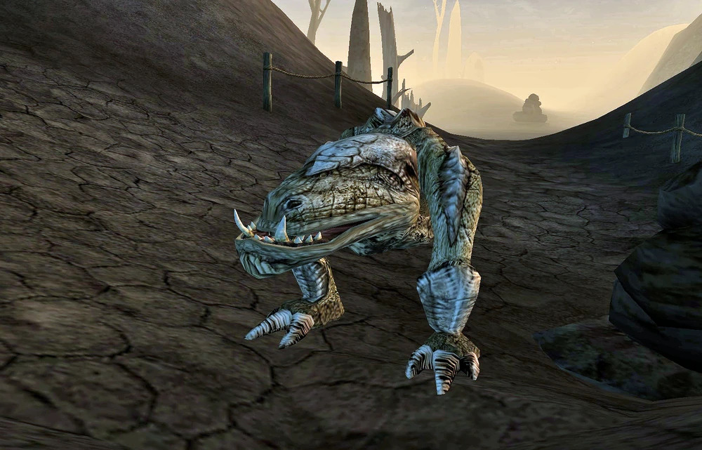
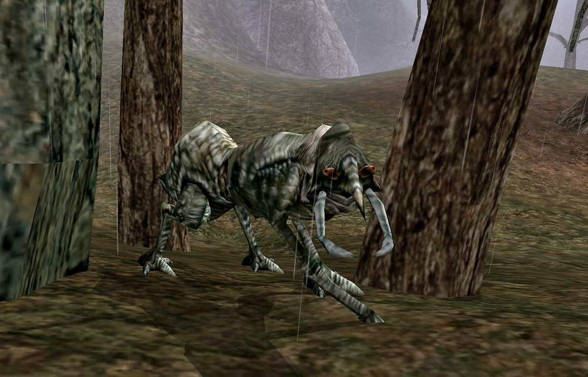

About Vivec's Environment

Credit: Elderscrolls.fandom.com, By AgentOfMara

Credit: Elderscrolls.fandom.com, By CarloV3r
Morrowind's Local Flora & Fauna
Get aquainted with some of the local wildlife of Morrowind!
FAUNA
| Name | Description | Image |
|---|---|---|
| Guar | Domesticated lizard-like creature used as a pack animal. |  Credit: Elderscrolls.fandom.com, By Cheatcodechamp |
| Kagouti | A hostile two-legged beast with a boar-like head and tusks. |  Credit: Elderscrolls.fandom.com, By EbonySkyrim |
| Cliff Racer | Flying nuisance creature known for attacking in swarms. |  Credit: Elderscrolls.fandom.com, By EbonySkyrim |
| Alit | A large, reptilian predator with a powerful bite. |  Credit: Elderscrolls.fandom.com, By EbonySkyrim |
| Nix-Hound | Insect-like hunter with long legs and a proboscis snout. |  Credit: Elderscrolls.fandom.com, By EbonySkyrim |
| Scrib | Larval form of the Kwama; non-hostile and slow-moving. | 
Credit: Elderscrolls.fandom.com, By EbonySkyrim |
| Kwama Forager | Scout of Kwama colonies; small and aggressive. | 
Credit: Elderscrolls.fandom.com, By EbonySkyrim |
| Shalk | Insect with a fiery bite and resistant shell. | 
Credit: Elderscrolls.fandom.com, By AgentOfMara |
| Mudcrab | Small coastal creature that ambushes travelers. | 
Credit: Elderscrolls.fandom.com, By EbonySkyrim |
| Rat | Common nuisance found in cities and caves. | 
Credit: Elderscrolls.fandom.com, By EbonySkyrim |
FLORA
| Name | Description | Image |
|---|---|---|
| Marshmerrow | A fibrous plant used in food and textile production. | 
Credit: Elderscrolls.fandom.com, By EbonySkyrim |
| Saltrice | Common edible plant grown in the Ascadian Isles. | 
Credit: Elderscrolls.fandom.com, By EbonySkyrim |
| Hackle-Lo Leaf | Used in cooking and alchemy; mildly narcotic. | 
Credit: Elderscrolls.fandom.com, By EbonySkyrim |
| Gold Kanet | Bright yellow flowering plant, valued for dyes. | 
Credit: Elderscrolls.fandom.com, By EbonySkyrim |
| Heather | Low-growing bush with pink flowers, used in potions. | 
Credit: Elderscrolls.fandom.com, By Rupuzioks |
| Comberry | Sweet berries used in brandy and potions. | 
Credit: Elderscrolls.fandom.com, By EbonySkyrim |
| Scathecraw | Sharp, red-leaved plant that grows in the Ashlands. | 
Credit: Elderscrolls.fandom.com, ByKool Khajiit |
| Draggle Tail | The immature state of the fruiting body of the primitive draggle-tail plant of the Bitter Coast is called the ampoule pod. | 
Credit: Elderscrolls.fandom.com, By EbonySkyrim |
| Black Anther | It has multiple leaves, and the tips of the petals are violet, while the middle part shines with a light yellow. | 
Credit: Elderscrolls.fandom.com, By EbonySkyrim |
| Willow Flower | Willow anther is the powdery residue from pollen-bearing parts of the willow flower. | 
Credit: Elderscrolls.fandom.com, By EbonySkyrim |